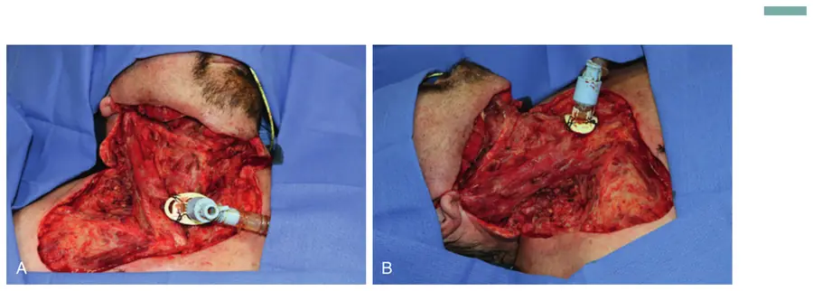

نسخه استخراجشده؛ ترجمه یا تأیید علمی انجام نشده است. وضعیت: captured
در مدیریت عفونتهای فضاهای فاشیال، مدیریت راه هوایی پیش از مدیریت جراحی میآید — و این ترتیب تصادفی نیست.

دلیلش ساده است: بیمار با عفونت فضاهای عمقی، ادم پیشرونده دارد. اگر راه هوایی پیش از تخلیه از دست برود، هیچ تخلیهای دیگر معنایی ندارد.
و نشانههایی که از درس اول این یونیت میآیند، اینجا به تصمیم تبدیل میشوند: دیسفونی، دیسفاژی، ناتوانی در مدیریت ترشحات، کار تنفسی افزایشیافته، و استریدور. هر یک از اینها یعنی راه هوایی در معرض تهدید است.
و مهمترین تصمیم بالینی این یونیت: بیماری که هر یک از این نشانهها را دارد، جای درمان در مطب نیست. این بیمار نیازمند ارجاع فوری به مرکزی است که بتواند راه هوایی را مدیریت کند — لولهگذاری، یا در صورت لزوم راه هوایی جراحی مثل تراکئوستومی — و تخلیهی خارجدهانی انجام دهد.
و در فاصلهی تصمیم تا انتقال: بیمار را در وضعیتی که خودش راحتتر نفس میکشد نگه دار — معمولاً نشسته و رو به جلو — و او را دراز نکش. اکسیژن بده، و پایش کن.
برای هر فضای فاشیال، رویکرد برش و تخلیه مشخص است — و فضاها از این نظر دو گروه بزرگاند.
فضاهایی که دسترسی داخلدهانی یا خارجدهانی دارند — مثل بادی مندیبل، ماستریک، پتریگومندیبولار، تمپورال سطحی و عمقی، و پریتونسیلار. یعنی بسته به وسعت و دسترسی، انتخاب داری.
و فضاهایی که تنها دسترسی خارجدهانی دارند — از فضاهای این یونیت: فضای اربیتال، لترال فارنژیال، رتروفارنژیال، پرهتراکئال، فضای خطر، و مدیاستن. سابمندیبولار و سابمنتال هم در همین گروهاند.
و این تقسیمبندی، خودش یک ابزار تصمیمگیری است: هر فضایی که در فهرست «تنها خارجدهانی» است، تقریباً همیشه از حیطهی مطب عمومی خارج است.
و اصلی که در درس دوم دیدی، اینجا عملی میشود: شناخت ساختارهای حیاتی درون هر فضا برای تخلیهی ایمن ضروری است — چون در فضای پتریگومندیبولار شاخهی سوم تریژمینال است، در فضای لترال فارنژیال شریان کاروتید و ورید ژوگولار داخلی، و در فضای اربیتال کرهی چشم و اعصاب مغزی.
برشی که بدون دانستن این محتویات زده شود، میتواند از خود عفونت آسیب بیشتری بزند.
نوع سؤال: ساخت کلمه · 7 خانه
حروف منبع: د · ر · ت · ک · و · ا · ی